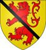

Baron. Blev ca 41 år.
omkring 1273 Abernethy, Pearthshire, Scotland. [1]
före 1315 Abernethy, Pearthshire, Scotland. [1]
Biografi
Alexander de Abernethy (död ca 1315) var en skotsk baron. Han var en ättling till lekmannaabbotar av Abernethy [1] hans farfar Laurence, och var den siste som innehade titeln som lekmannaabbot av Abernethy när kungen nekade honom alla sina inkomster som abbot, och överlämnade dem till munkarna i den nyligen grundade Abbey of Arbroath. Laurence behöll äganderätten till Lord of Abernethy, en fastighet som ligger på gränsen mellan Perthshire och Fife (nu Perthshire, ursprungligen Fife).
Han föddes troligen strax efter 1272. Balfour Paul [2] anger att det var hans mor som kallades för att förklara huruvida hon visste något för att hindra Alexander, son till Hugh de Abernethy från att få besittning av Ballintrays och andras land och, i samma parlament tillhandahölls hans mark i ward till Alexander de Menteith. Han var alltså inte myndig 1292. Han svor dock trohet till Edward I i St. Andrews den 19 juli 1291.
Han blev liegeman åt Edward I., förblev lojal mot den engelska tronen genom frihetskrigen. Han gynnades och betroddes av Edvard och till vars intressen, och senare hans son Edvard II., han stödde.
Mellan 1301 och 1303 utsågs han till vaktmästare i Skottland mellan Forth och Mounth. Han förlorade ämbetet i kung Edwards förordningar från 1305 men stödde Balliols anspråk på Bruces. Han beordrades att gå med i John of Bretagnes expedition för att försvara Galloway mot Robert Bruce och var frånvarande från kung Roberts första parlament 1309. I juni 1308 utsågs han till vaktmästare i Skottland mellan Forth och Orkneyöarna i juni 1308 tillsammans med Edward Hastings; och i juli 1310 - vaktmästare mellan Forth och bergen. Han kontrakterades också att tjänstgöra från september i Berwick och Perthshire under befäl av Sir John de Segrave. Han mottog Clackmannan i Stirlingshire från Edward II 1310, var målvakt i Dundee åtminstone i mitten av 1311 och ledde det misslyckade försvaret av staden mot Edward Bruce 1312.
När Robert the Bruce lyckades etablera sin auktoritet som skotsk kung, förklarades Sir Alexander Abernethys ägodelar vara förverkade, och han blev i allt väsentligt en engelsman. Han tjänstgjorde som engelsk ambassadör i Frankrike mellan 1310 och 1315.
Han dog efter 1315, när han bevittnar en stadga av grevinnan av Atholl och 1317. Balfour Paul säger att hans fru är okänd även om han hade två döttrar. Han tros ha gift sig med Margaret de Menteith, dotter till Alexander, Earl of Menteith, tidigare hans förmyndare [3] . Det finns en "lady Margaret de Abrenythy" noterad som en dam vid hovet hos Isabella av Frankrike, drottning av England, 1311/12, förmodligen när Alexander var ambassadör. Det här kan vara hans fru eller hans dotter.
Hans armar, som nu hölls kvar genom armarna på hans döttrar, var eller, ett lejon skenande gules, förstörda av ett band sobel. Den äldsta manliga linjen av Lords of Abernethy hade alltså dött ut, tronföljden öppnade sig för ättlingarna till den tredje sonen till hans farfar, Sir Laurence Abernethy.